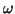
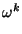
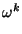
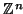

It is easy to describe the nth roots of unity. Let
 = exp(- 2 i/n);
then the roots are all of the form  for some k with
0
i/n);
then the roots are all of the form  for some k with
0 k < n. Note also that satisfies the condition of the
lemma. We now define the Fourier matrix
k < n. Note also that satisfies the condition of the
lemma. We now define the Fourier matrix
 n for any
integer n
n for any
integer n 1 by:
1 by:
 .
.
A word about notation: we shall have quite a lot to do with . Note
the choice of sign in the exponent; it was arbitrary, but this way the
definition of
 n is correct. When we need to
emphasise that we have an
nth root of unity, we shall write
n is correct. When we need to
emphasise that we have an
nth root of unity, we shall write
 .
.
In the study of complex vector spaces, an interesting class of matrices are the unitary ones; those whose inverse is the adjoint. They are the complex equivalent of the orthogonal matrices, in which the inverse is just the transpose. An orthogonal matrix represents a rotation of given orthonormal axes (possibly with a reflection); a unitary matrix could be considered for this reason, as a complex rotation.
We can identify a complex valued function defined on
 with an
element of
 by
f
by
f f = (f (0), f (1),..., f (n - 1)).6.1 The discrete
Fourier transform of
f is then defined to be the action of the
Fourier matrix on
(f (0), f (1),..., f (n - 1)). It will be convenient
to write
f = (f (0), f (1),..., f (n - 1)).6.1 The discrete
Fourier transform of
f is then defined to be the action of the
Fourier matrix on
(f (0), f (1),..., f (n - 1)). It will be convenient
to write
 , or
f = (f1, f2,..., fn - 1) although we
think of
, or
f = (f1, f2,..., fn - 1) although we
think of
 in this form as periodic functions on
.
in this form as periodic functions on
.
Identifying the Fourier matrix as unitary gives one way of thinking of
the discrete Fourier transform; as a complex rotation in
 . The
idea that a rotation of the co-ordinate axes will preserve essential
features of a problem, while possibly making the new co-ordinate
representation easier to work with, is a familiar one. We thus begin
a study which will show there are indeed some things which are easier
to describe and manipulate in the transformed representation.
. The
idea that a rotation of the co-ordinate axes will preserve essential
features of a problem, while possibly making the new co-ordinate
representation easier to work with, is a familiar one. We thus begin
a study which will show there are indeed some things which are easier
to describe and manipulate in the transformed representation.